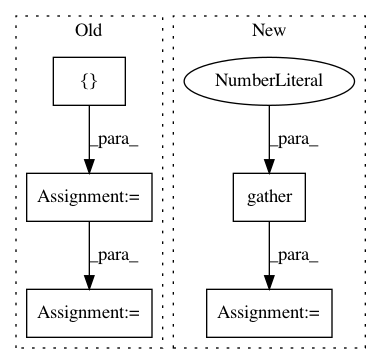

42e1e47ff386be77b740b64771644ea7aa875880,finetune/nn/target_blocks.py,,masked_language_model,#,51
Before Change
log_probs = tf.nn.log_softmax(logits, axis=-1)
one_hot_labels = tf.one_hot(mlm_ids, depth=n_vocab, dtype=tf.float32)
per_example_loss = -tf.reduce_sum(log_probs * one_hot_labels, axis=[-1])
numerator = tf.reduce_sum(mlm_weights * per_example_loss)
denominator = tf.reduce_sum(mlm_weights) + 1e-5
mlm_loss = numerator / denominator
return {
"logits": logits,
"losses": mlm_loss,
After Change
hidden = merge_leading_dims(hidden, 3)
batch, seq, _ = shape_list(X)
with tf.variable_scope("model/masked-language-model"):
gathered_hidden = merge_leading_dims(tf.gather(hidden, mlm_positions, batch_dims=1), 2)
final_proj_w = tf.get_variable(
"dense/kernel",
[config.n_embed, config.n_embed],
initializer=tf.random_normal_initializer(stddev=config.weight_stddev)
)
final_proj_b = tf.get_variable(
"dense/bias",
[config.n_embed],
initializer=tf.zeros_initializer
)
final_proj = act_fns[config.act_fn](
tf.matmul(gathered_hidden, final_proj_w, transpose_b=True) + final_proj_b
)
normed_proj = norm(final_proj, "LayerNorm")
n_vocab = shape_list(embed_weights)[0]
output_bias = tf.get_variable(
"output_bias",
shape=[n_vocab],
initializer=tf.zeros_initializer()
)
logits = tf.matmul(normed_proj, embed_weights, transpose_b=True)
logits = tf.nn.bias_add(logits, output_bias)
mlm_ids = tf.reshape(mlm_ids, [-1])
mlm_weights = tf.reshape(mlm_weights, [-1])
mlm_loss = tf.contrib.losses.sparse_softmax_cross_entropy(
logits,
mlm_ids,
weights=mlm_weights,
)
return {
"logits": logits,
"losses": mlm_loss,
In pattern: SUPERPATTERN
Frequency: 3
Non-data size: 5
Instances
Project Name: IndicoDataSolutions/finetune
Commit Name: 42e1e47ff386be77b740b64771644ea7aa875880
Time: 2020-02-26
Author: benlt@hotmail.co.uk
File Name: finetune/nn/target_blocks.py
Class Name:
Method Name: masked_language_model
Project Name: ixaxaar/pytorch-dnc
Commit Name: 2026a8939d9ccc3e26ac776db5b4788846fd166c
Time: 2017-12-03
Author: root@ixaxaar.in
File Name: dnc/sparse_memory.py
Class Name: SparseMemory
Method Name: read_from_sparse_memory
Project Name: tensorflow/lattice
Commit Name: 1c75176947730de8322acf6ad996096625e92e3a
Time: 2020-06-15
Author: no-reply@google.com
File Name: tensorflow_lattice/python/rtl_layer.py
Class Name: RTL
Method Name: call